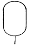
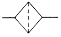
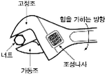

지게차운전기능사 (2009-01-18 기출문제)
1. 기관에서 캠축을 체인의 헐거움을 자동 조정하는 장치는?
- 댐퍼(damper)
- 텐셔너(tensioner)
- 서포트(support)
- 부시(bush)
(정답률: 66%)

2. 기관과열의 주요원인이 아닌 것은?
- 라디에이터 코어의 막힘
- 냉각장치 내부의 물때 과다
- 냉각수의 부족
- 오일링 과다
(정답률: 79%)
3. 1KW는 몇 PS인가?
- 0.75
- 1.36
- 75
- 735
(정답률: 58%)
4. 기관출력을 저하시키는 원인이 아닌 것은?
- 연료 분사양이 적을 때
- 노킹이 일어날 때
- 기관오일을 교환하였을 때
- 실린더 내의 압축압력이 낮을 때
(정답률: 82%)
5. 건설기계 운전 중 엔진보조를 하다가 시동이 꺼졌다. 그 원인이 아닌 것은?
- 연료필터 막힘
- 연료에 물 혼입
- 분사노즐이 막힘
- 연료장치의 오프플로 호스 파손
(정답률: 52%)
6. 시동을 걸 때 점검해야 할 사항으로 맞지 않는 것은?
- 윤활계통의 공기빼기가 잘되었는지 확인한다.
- 라디에이터 캡을 열고 냉각수가 채워져 있는지 확인한다.
- 오일레벨 게이지로 점검하여 윤활유가 정상적인지 확인한다.
- 배터리 충전이 정상적으로 되어 있는지 확인한다.
(정답률: 64%)
7. 가압식 라디에이터의 장점으로 틀린 것은?
- 방열기를 작게 할 수 있다.
- 냉각수의 비등점을 높일 수 있다.
- 냉각수의 순환속도가 빠르다.
- 냉각수 손실이 적다.
(정답률: 31%)
8. 건설기계용 경유의 중요한 성질이 아닌 것은?
- 옥탄가
- 비중
- 착화성
- 세탄가
(정답률: 68%)
9. 4행정 기관에서 크랭크축 기어와 캠축 기어와의 지름의 비 및 회전 비는 각각 얼마인가?
- 2:1 및 1:2
- 2:1 및 2:1
- 1:2 및 2:1
- 1:2 및 1:2
(정답률: 63%)
10. 과급기를 부착하였을 때의 이점이 아닌 것은?
- 고지대에서도 출력의 감소가 적다.
- 회전력이 증가한다.
- 기관출력이 향상된다.
- 압축온도의 상승으로 착화지연시간이 길어진다.
(정답률: 76%)
11. 과급기 케이스 내부에 설치되며, 공기의 속도에너지를 압력에너지로 바꾸는 장치는?
- 임펠러
- 디퓨저
- 터빈
- 디플렉터
(정답률: 57%)
12. 4행정 기관에서 일반적으로 사용되는 윤활방식은?
- 혼합식
- 분리식
- 중력식
- 압송식
(정답률: 75%)
13. 예연소실식 디젤기관에서 연소실 내의 공기를 직접 예열하는 방식은?
- 맵센서식
- 예열플러그식
- 공리량계측기식
- 압송식
(정답률: 81%)
14. 같은 축전지 2개를 직렬로 접속하면 어떻게 되는가?
- 전압은 2배가되고, 용량은 같다.
- 전압은 같고, 용량은 2배가 된다.
- 전압과 용량은 변화가 없다.
- 전압과 용량 모두 2배가 된다.
(정답률: 73%)
15. 배터리의 충방전 작용은 다음 어떤 작용을 이용한 것인가?
- 발열작용
- 자기작용
- 화학작용
- 발광작용
(정답률: 65%)
16. 건설기계에서 시동전동기의 회전이 안 될 경우 점검할 사항이 아닌 것은?
- 축전지의 방전 여부
- 배터리 단자의 접촉 여부
- 팬벨트의 이완 여부
- 배선의 단선 여부
(정답률: 76%)
17. 12V 납축전지 셀에 대한 설명으로 맞는 것은?
- 6개의 셀이 직렬로 접속되어 있다.
- 6개의 셀이 병렬로 접속되어 있다.
- 6개의 셀이 직렬과 병렬로 혼용하여 접속되어 있다.
- 3개의 셀이 직렬과 병렬로 혼용하여 접속되어 있다.
(정답률: 54%)
18. NPN형 트랜지스터에서 접지되는 단자는?
- 베이스
- 이미터
- 켈렉터
- 트랜지스터 몸체
(정답률: 45%)
19. 기중기 크람셀 장치에서 태그라인의 역할은?
- 전달을 안전하게 연장하는 로프이다.
- 지브붐이 휘는 것을 방지해 준다.
- 와이어 케이블의 청소와 원활감을 유도한다.
- 와이어 케이블이 꼬이고, 버킷이 요동되는 것을 방지한다.
(정답률: 61%)
20. 다음 중 무한궤도형 건설기계에서 클러치판의 비틀림 코일스프링의 역할은?(오류 신고가 접수된 문제입니다. 반드시 정답과 해설을 확인하시기 바랍니다.)
- 트랙의 서행 회전
- 트랙이 너무 이완되었을 때
- 파이널 드라이브의 마모
- 보조스프링이 파손되었을 때
(정답률: 45%)
21. 기계식 변속기가 설치된 건설기계에서 클러치판의 비틀림 코일스프링의 역할은?
- 클러치판이 더욱 세게 부착되도록 한다.
- 클러치 작동시 충격을 흡수한다.
- 클러치의 회전력을 증가시킨다.
- 클러치판과 압력판의 마멸을 방지한다.
(정답률: 66%)
22. 무한궤도형 굴삭기의 부품이 아닌 것은?
- 유압펌프
- 오일쿨러
- 자재이음
- 주행모터
(정답률: 60%)
23. 굴삭기 동력전달 계통에서 최종적으로 구동력 증가를 하는 것은?
- 트랙모터
- 종감속기어
- 스프로킷
- 변속기
(정답률: 49%)
24. 토크컨버터 동력전달 매체로 맞는 것은?
- 클러치판
- 유체
- 벨트
- 기어
(정답률: 34%)
25. 지게차를 전후진 방향으로 서서히 화물에 접근시키거나 빠른 유압작동으로 신속히 화물을 상승 또는 적재시킬 때 사용하는 것은?
- 인칭조절 페달
- 액셀러레이터 페달
- 디셀레이터 페달
- 브레이크 페달
(정답률: 48%)
26. 공기브레이크에서 브레이크슈를 직접 작동시키는 것은?
- 릴레이 밸브
- 브레이크 페달
- 캠
- 유압
(정답률: 48%)
27. 다음 중 통행의 우선순위가 맞는 것은?
- 긴급자동차→일반자동차→원동기장치 자전거
- 긴급자동차→원동기장치 자전거→승용자동차
- 건설기계→원동기장치 자전거→승합자동차
- 승합자동차→원동기장치 자전거→긴급자동차
(정답률: 78%)
28. 건설기계를 운전하여 교차로에서 우회전을 하려고 할 때 가장 적합한 것은?
- 우회전 신호를 행하면서 우회전 한다.
- 신호를 하고 우회전하며, 속도를 빨리하여 진행한다.
- 서행으로 신호를 행하면서 보행자가 있을 때는 보행자의 통행을 방해하지 않도록 하여 우회전한다.
- 우회전은 언제 어느 곳에서나 할 수 있다.
(정답률: 81%)
29. 건설기계 조종 중 고의로 인명피해를 입힌 때 면허 처분기준으로 맞는 것은?
- 면허취소
- 면허효력 정지 45일
- 면허효력 정지 30일
- 면허효력 정지 15일
(정답률: 87%)
30. 건설기계 구조변경 검사신청은 변경한 날로부터 며칠 이내에 하여야 하는가?
- 30일 이내
- 20일 이내
- 10일 이내
- 7일 이내
(정답률: 28%)
31. 건설기계 대여업을 하고자 하는 자는 누구에게 등록을 하여야 하는가?
- 노동부장관
- 행정안전부장관
- 국토해양부장관
- 시, 도지사
(정답률: 83%)
32. 보도와 차도가 구분된 도로에서 중앙선이 설치되어 있는 경우 차마의 통행방법으로 맞는 것은?
- 중앙선 좌측
- 중앙선 우측
- 좌우측 모두
- 보도의 좌측
(정답률: 70%)
33. 정기검사 유효기간이 3년인 건설기계는?
- 덤프트럭
- 콘크리트믹서트럭
- 트럭 적재식 콘크리트 펌프
- 무한궤도식 굴삭기
(정답률: 63%)
34. 다른 교통에 주의하며 방해되지 않게 진행할 수 있는 신호로 가장 적합한 것은?
- 적색등화 점멸
- 황색등화 점멸
- 적색신호
- 녹색등화 점멸
(정답률: 58%)
35. 건설기계등록번호표에 대한 사항 중 틀린 것은?
- 모든 번호표의 규격은 동일하다.
- 재질은 철판 또는 알루미늄판이 사용된다.
- 굴삭기일 경우 기종별 기호표시는 02로 한다.
- 외곽선은 1.5mm로 튀어나와야 한다.
(정답률: 55%)
36. 1종 대형 운전면허로 건설기계를 운전할 수 없는 것은?
- 덤프트럭
- 노상안정기
- 트럭적재식천공기
- 특수건설기계
(정답률: 76%)
37. 유압실린더를 교환한 후 우선적으로 시행하여야 할 사항은?
- 엔진을 저속 공회전 시킨 후 공기빼기작업을 실시한다.
- 엔진을 고속 공회전 시킨 후 공개빼기작업을 실시한다.
- 유압장치를 최대한 부하상태로 유진한다.
- 압력을 측정한다.
(정답률: 68%)
38. 기어펌프의 특징이 아닌 것은?
- 구조가 간단하다.
- 고장이 많다.
- 가격이 저렴하다.
- 효율이 낮다.
(정답률: 47%)
39. 건설기계장비에서 유압 구성부품을 분해하기 전에 내부압력을 제거하려면 어떻게 하는 것이 좋은가?
- 압력밸브를 밀어 준다.
- 고정너트를 서서히 푼다.
- 엔진정지 후 조정레버를 모든 방향으로 작동하여 압력을 제거한다.
- 엔진정지 후 개방하면 된다.
(정답률: 63%)
40. 건설기계 운전시 갑자기 유압이 발생되지 않을 때 점검 내용으로 가장 거리가 먼 것은?
- 오일가스켓 파손여부 점검
- 유압실린더의 피스톤 마모 점검
- 오일파이프 및 호스가 파손되었는지 점검
- 오일량 점검
(정답률: 36%)
41. 건설기계에서 사용하는 작동유의 온도범위로 가장 적합한 것은?
- 10~30℃
- 40~60℃
- 80~100℃
- 90~110℃
(정답률: 66%)
42. 릴리프밸브(relief valve)에서 볼(ball)이 밸브의 시트(seat)를 때려 소음을 발생시키는 현상은?
- 차터링(chatterlng) 현상
- 베이퍼록(vapor lock) 현상
- 페이드(fade) 현상
- 노킹(knocking) 현상
(정답률: 49%)
43. 건설기계에 사용되는 유압실린더는 어떠한 원리를 응용한 것인가?
- 베르누이의 정리
- 파스칼의 원리
- 지렛대의 원리
- 후크의 법칙
(정답률: 79%)
44. 유압에너지를 공급받아 회전운동을 하는 기기를 무엇이라 하는가?
- 펌프
- 모터
- 밸브
- 롤러리미트
(정답률: 74%)
45. 그림의 유압기호에서 어큐뮬레이터는?


(정답률: 56%)
46. 기름의 흐름을 바꾸어주는 밸브는?
- 유량제어 밸브
- 입력제어 밸브
- 방향제어 밸브
- 방향증대 밸브
(정답률: 66%)
47. 기계시설의 안전 유의사항으로 적합하지 않은 것은?
- 회전부분(기어, 벨트, 체인) 등은 위험하므로 반드시 커버를 씌어둔다.
- 발전기, 용접기, 엔진 등 장비는 한 곳에 모아서 배치한다.
- 작업장 통로는 근로자가 안전하게 다닐 수 있도록 정리정돈을 한다.
- 작업장의 바닥은 보행에 지장을 주지 않도록 청결하게 유지한다.
(정답률: 82%)
48. 간단한 장비점검 및 수리를 위해 스패너를 사용하려고 한다. 맞는 것은?
- 스패너는 볼트, 너트에 관계없이 아무거나 사용한다.
- 크기가 맞지 않으면 쐐기를 박아서 사용한다.
- 파이프를 스패너 자루에 끼워서 사용한다.
- 스패너는 볼트, 너트에 맞는 것을 사용한다.
(정답률: 86%)
49. 다음 그림은 안전표지의 어떠한 내용을 나타내는가?
- 지시표지
- 금지표지
- 경고표지
- 안내표지
(정답률: 74%)
50. 그림과 같이 조정렌치의 힘이 작용되도록 사용하는 이유로 맞는 것은?

- 볼트나 너트의 나사신의 손상을 방지하기 위하여
- 작은 힘으로 풀거나 조이기 위하여
- 렌치의 파손을 방지하고, 안전한 자세이기 때문임
- 규정토크로 조이기 위하여
(정답률: 54%)
51. 기중기로 물건을 운반시 주의할 사항으로 잘못된 것은?
- 적재물이 떨어지지 않도록 한다.
- 규정 무게보다 약간 초과할 수도 있다.
- 로프 등의 안전여부를 항상 점검한다.
- 운반 중 사람이 다치지 않도록 한다.
(정답률: 89%)
52. 작업복 등이 말려드는 위험이 주로 존재하는 기계 및 기구와 가장 거리가 먼 것은?
- 회전축
- 커플링
- 벨트
- 프레스
(정답률: 55%)
53. 가연성 가스 저장실에 안전사항으로 옳은 것은?
- 기름걸레를 이용하여 통과 통 사이에 끼워 충격을 적게 한다.
- 휴대용 전등을 사용한다.
- 담배 불을 가지고 출입한다.
- 조명은 백열등으로 하고 실내에 스위치를 설치한다.
(정답률: 70%)
54. 가스용접시 사용되는 산소호스는 어떤 색인가?
- 적색
- 황색
- 녹색
- 청색
(정답률: 73%)
55. 안전을 위하여 눈으로 보고 손으로 가리키고, 입으로 복창하여 귀로 듣고, 머리로 종합적인 판단을 하는 지적확인의 특성은?
- 의식을 강화한다.
- 지식수준을 높인다.
- 안전태도를 형성한다.
- 육체적 기능 수준을 높인다.
(정답률: 50%)
56. 가동하고 있는 엔진에서 화재가 발생하였다. 불을 끄기 위한 조치방법으로 올바른 것은?
- 원인을 분석하고, 모래를 뿌린다.
- 포말소화기를 사용 후 엔진 시동스위치를 끈다.
- 엔진 시동스위치를 끄고, ABC소화기를 사용한다.
- 엔진을 급가속 하여 팬의 강한 바람을 일으켜 불을 끈다.
(정답률: 83%)
57. 가공 전선로에서 건설기계 운전작업시 안전대책으로 가장 거리가 먼 것은?
- 안전한 작업계획을 수립한다.
- 장비사용을 위한 신호수를 정한다.
- 가공선로에 대한 감전방지 수단을 강구한다.
- 가급적 짐은 가공선로 하단에 보관한다.
(정답률: 82%)
58. 154kV 송전선로 주변에서 크레인 작업에 관한 내용이다. 가장 적합한 내용은?
- 전력선에 접촉되더라도 끊어지지 않으면 계속 작업한다.
- 직접 전력선에 접촉되지 않고 접근만 해도 감전될 수 있다.
- 전력선에 접촉만 않도록 하여 조심하여 작업한다.
- 한전에만 연락하면 전력선에 접촉해도 안전하다.
(정답률: 69%)
59. 가스배관매설 상황조사결과 공사구역 내에 도시가스 배관이 매설되어 있는 것이 확인 된 경우 가스배관의 안전에 관하여 누구와 협의하여야 하는가?
- 한국가스안전공사
- 도시가스사업자
- 사장
- 도지사
(정답률: 49%)
60. 도로 폭이 8m이상의 큰 도로에서 장애물 등이 없을 경우 일반 도시가스 배관의 최소 매설 깊이는?
- 0.6m 이상
- 1.2m 이상
- 1.5m 이상
- 2m 이상
(정답률: 58%)